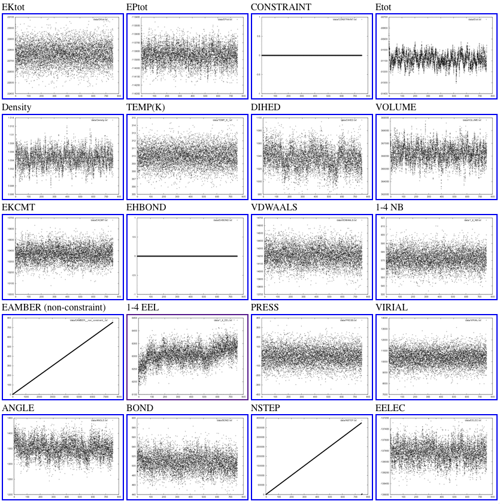
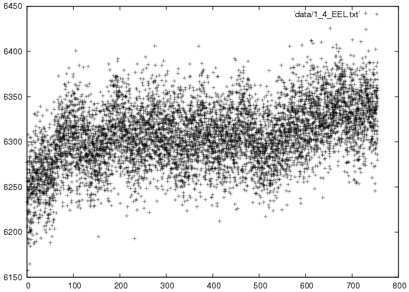
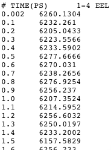

Analyzing MD simulations requires assessment of the convergence of dynamic properties, such as temperature, pressure, total energy, potential energy, kinetic energy, and various error estimates. This assessment is facilitated with PyPAT. The AMBER MD engine, sander, outputs the dynamic property information to a text file.
parse_sander_output.py parses this file and compiles data of the relevant quantities vs. time in tab-delimited files. It then generates graphical images of the time-evolution of the properties and an html file that shows thumbnails of all these images, nested with links to larger versions.
The HTML overview from a short MD simulation looks like:
Clicking on individual thumbnails leads to larger images like:
One more click shows the underlying data in a tab-delimited format easily read by Excel and other scripts:
Usage:
parseSanderOut.py -f file.out -d dirname
will put the data in file.out into nice files in dirname.
The directory called dirname must not exist when this script is run.
Among those files are:
data/allout.txt tab-delimited text file with all information
(suitable for gnumeric, koffice or excel)
data/Etot.txt, etc. individual files with different types of sander
output (two columns per file, one is time(ps))
results.html html file showing you lots graphs of your data
images/* postscript and gif graphs of your data
So, for the most part, you probably just want to point your favorite
webbrowser at dirname/results.html.
NOTE: this script assumes that you have gnuplot and convert installed
and in your path.
Options:
-h, --help show this help message and exit
-f DATAFILENAME, --file=DATAFILENAME
The name of the sander output file to parse [default
sander.out]
-d OUTDIR, --dir=OUTDIR
The name of the output directory (must not exist)
[default data]